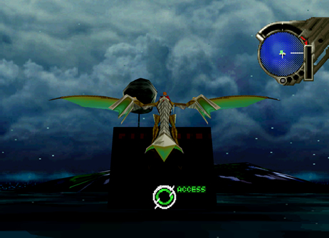

Secret and Optional NPC Dialogue
| Optional Conversation # 1 (Secret) Disc: 1 Location: Excavation Site Characters: Gash Criteria: After defeating the Arachnoth and before going to the Village of Cainus, go back to the Excavation Site. Gash will be walking around on foot and you can talk to him. He has 4 different dialogue options. 2 near/close up (yellow cursor) and 2 from far (blue cursor). |
1. Go to the Excavation Site before going to the Village of Cainus. |
2. Dialogue from afar. |
| 3. Dialogue up close. |

| Optional Conversation # 2 Disc: 1 Location: Caravan Characters: Kou and Fei Criteria: After defeating the Gigra go to the Caravan.
After talking to An'Jou go into the tent towards the back. Select them
from afar to hear their conversation. Also, be sure to talk to Fei normally,
close up until she talks about traveling outside the village. Once she
asks this 2 more dialogue options from afar will open up. |
1. Go to the Caravan. |
2. Enter Kou and Fei's tent. |
3. Stand far away and select Fei from afar to hear her dialogue. |
4. Stand far away and select Kou from afar to hear her dialogue. |
|
5. Talk to Fei normally up close and 2 more options of dialogue from afar open up. |


| Optional Conversation # 3 (Secret) Disc: 1 Location: Forbidden Zone Characters: Edge Criteria: In the Forbidden Zone you will have to activate 8 keys. Before activating one fly directly below and in front of it. Now activate it and you should be stuck behind it as it moves and get a hidden message from Edge. Now, once all 8 keys are activated they will be spinning in the center of the stage. If you place yourself in front of one just right, so it takes you along with it, you can activate it for another hidden message! |
 1. Place the dragon in front of one of the 8 keys and activate it. |
2. You will get a hidden message as you get pushed along! |
3. Once all of the keys are activated, fly in the center, position yourself on the outer edge of one of them until you are circling with the keys. Then, lock-on for another hidden message! |